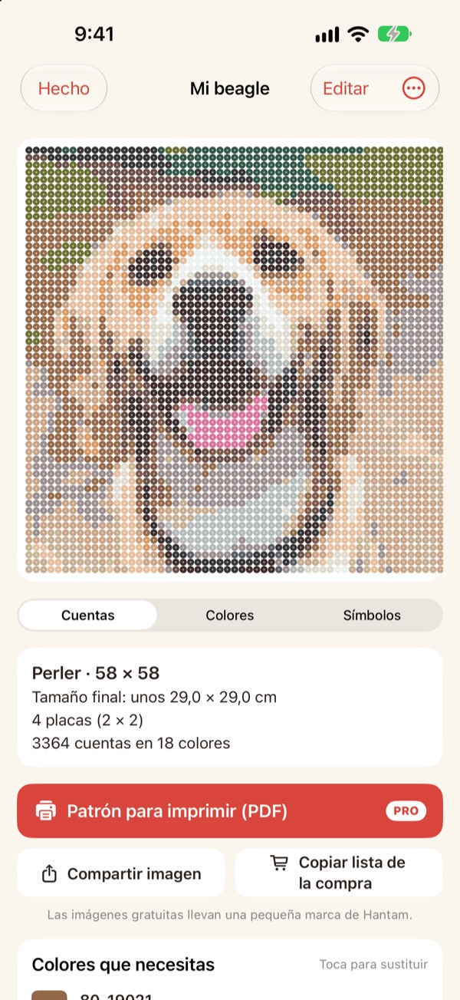
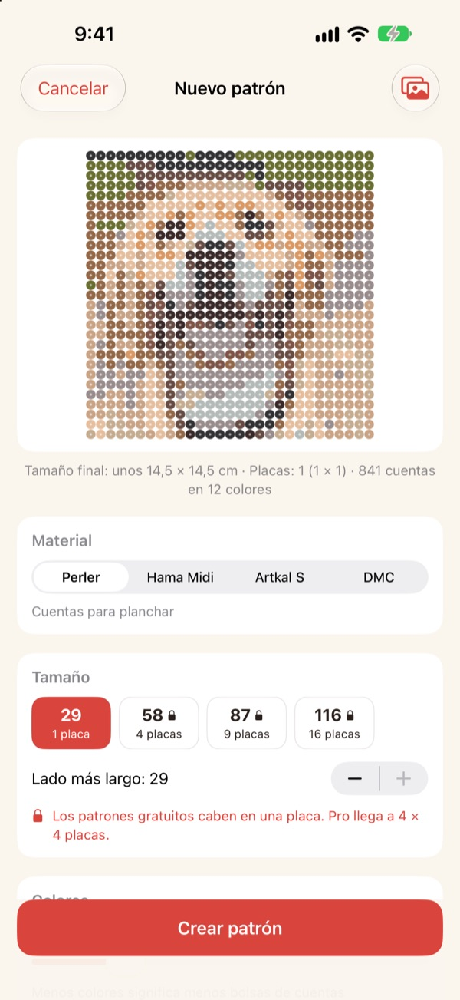
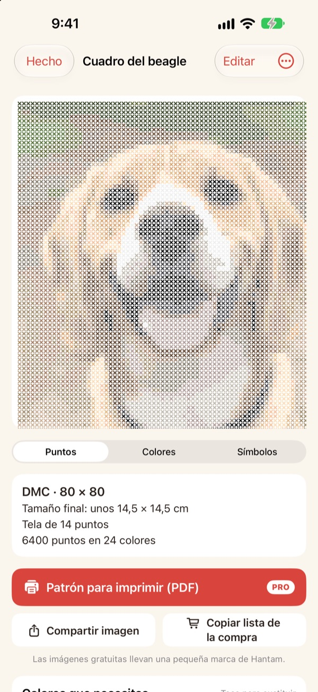
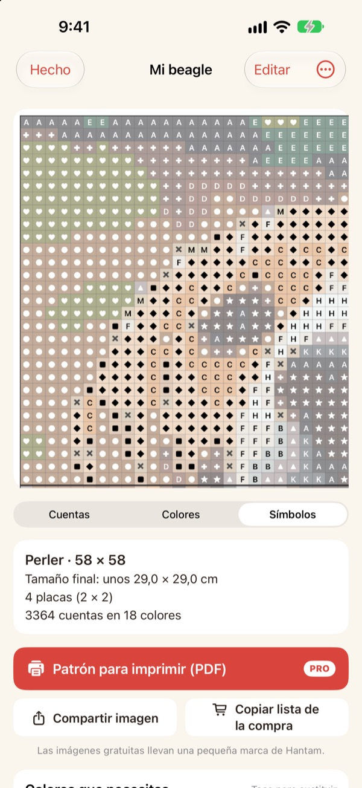
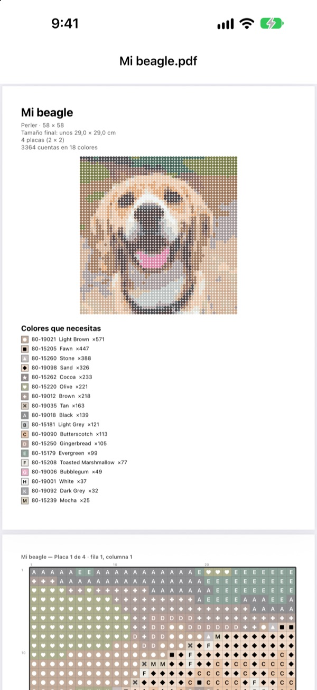

Convierte una foto
en un patrón
Elige una foto de tu mascota, tu cara o tu personaje favorito. Hantam la convierte en un patrón de cuentas para planchar o de punto de cruz, con colores que puedes comprar.
Gratis para patrones de un panel. Tus fotos no salen de tu iPhone.

Pruébalo con una foto
Es la misma forma de elegir colores que usa la app, con la carta de colores real de Perler. Cambia el tamaño y el número de colores, o prueba con una foto tuya.
Hacer un patrón es fácil. Que cuadre con cuentas de verdad, no tanto
Si pixelas una foto con cualquier editor, salen colores que ninguna cuenta ni ningún hilo tiene. Luego toca adivinar de qué bote sale cada cuadro y contar cuántas comprar de cada color. Hantam elige solo entre colores que se venden y te dice exactamente cuántas necesitas.
Colores reales, números reales
Elige cuentas Perler, Hama Midi o Artkal S, o hilo DMC. Cada cuadro se ajusta a un color que esa marca vende de verdad y lleva su número.
Tú decides el tamaño y cuántos colores usar. Los patrones grandes se dividen en paneles de 29 × 29.

También punto de cruz
Elige hilo DMC y la misma foto se convierte en un patrón de punto de cruz. Escoge tela Aida de 11, 14, 16 o 18 y Hantam te muestra el tamaño final y cuántas puntadas lleva cada color.

Sabes exactamente qué comprar
Cambia al patrón de símbolos para seguirlo cuadro a cuadro, con líneas gruesas en cada borde de panel o cada 10 puntadas. Mira cuántas cuentas lleva cada color y usa Copiar lista de la compra de un toque.
Toca un cuadro para cambiarlo o sustituye un color por otro en todo el patrón.

Imprímelo y empieza
Con Pro, exporta un Patrón para imprimir (PDF): primero la lista de colores y luego los patrones de símbolos, panel a panel.

Tres pasos hasta tu patrón
- 1
Elige una foto
Mascotas, caras, logos o personajes. Las fotos con un protagonista claro quedan mejor.
- 2
Elige cuentas o hilo
Decide la marca, el tamaño y cuántos colores.
- 3
Manos a la obra
Sigue el patrón en pantalla o imprímelo con Pro.
Materiales y tamaños
- Perler · Hama Midi · Artkal S
- Cuentas para planchar, paneles de 29 × 29, cada cuenta mide unos 5 mm
- DMC
- Hilo de punto de cruz sobre Aida de 11, 14, 16 o 18
- Gratis
- Cuentas hasta 1 panel (29 cuadros), hilo hasta 40 puntadas en el lado más largo
- Pro
- Cuentas hasta 4 × 4 paneles (116 cuadros), hilo hasta 200 puntadas
- Colores
- De 2 a 50 por patrón
Perler, Hama, Artkal y DMC son marcas registradas de sus respectivos propietarios. Hantam no está afiliada a ellas. Los colores en pantalla pueden verse algo distintos de los reales.
Empieza gratis. Pro para patrones grandes y para imprimir
Gratis
- Patrones de hasta un panel o 40 puntadas
- Todas las marcas: Perler, Hama, Artkal y DMC
- Cantidad por color, lista de la compra y cambio de colores
- Hasta 3 patrones guardados
- Imágenes para compartir con una pequeña marca de Hantam
Hantam Pro
- Patrones en PDF para imprimir
- Hasta 4 × 4 paneles o 200 puntadas
- Patrones guardados sin límite
- Imágenes sin marca
- Todas las herramientas de pixel art
Suscripción mensual o anual, o un pago único de por vida
También puedes regalar Pro a un amigo desde la app.
Preguntas frecuentes
¿Se suben mis fotos a algún sitio?
No. Las fotos y los patrones se procesan y guardan solo en tu iPhone.
Los colores se ven algo distintos de mis cuentas.
La pantalla muestra los colores de forma distinta al plástico y al hilo. Toca un color de la lista para cambiarlo por otro más parecido de la misma marca.
¿Qué tamaño puede tener un patrón?
Gratis, un panel de 29 × 29 o 40 puntadas en el lado más largo. Con Pro, hasta 4 × 4 paneles (116 cuentas) o 200 puntadas.
¿Qué fotos quedan mejor?
Las que tienen un solo protagonista y un fondo sencillo. Cuantos menos colores, más limpio queda el patrón, así que si se ve muy recargado, baja el número de colores.
¿Puedo seguir haciendo pixel art?
Sí. Puedes pixelar fotos, dibujar siguiendo 110 ejemplos y animar fotograma a fotograma. Todas las herramientas de pixel art están en Pro.
¿Cómo restauro mi compra?
Abre los ajustes de la app y toca Restaurar compras. Usa la misma cuenta de Apple con la que compraste Pro.
¿Cómo cancelo la suscripción?
Ve a Ajustes del iPhone › tu nombre › Suscripciones y elige Hantam. El acceso de por vida es un pago único y nunca se renueva.
¿Cómo informo de un error o propongo una idea?
Lo más rápido es enviar tus comentarios desde los ajustes de la app. También puedes escribirnos al correo de abajo o por mensaje directo en Instagram (@lee25_ios).
Dudas, errores e ideas: escríbenos a leeo@kakao.com.